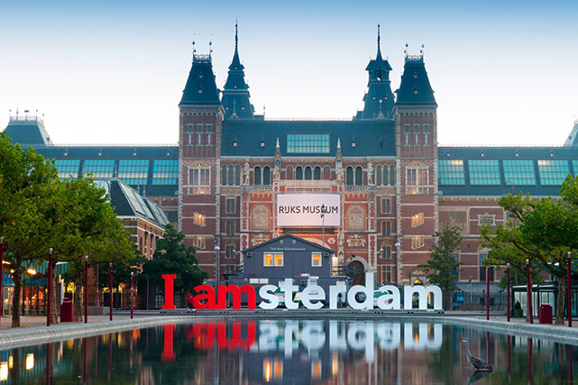
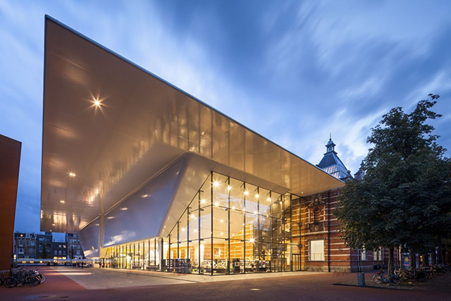

El Rijksmuseum
Considerat un dels museus més impressionants del món, i amb 200 anys d'antiguitat sota l'esquena, el Rijksmuseum conté en el seu interior amb una col·lecció d'objectes antics, gravats, dibuixos, fotografies clàssiques, en resum, resulta una visita gairebé obligada per a qualsevol turista. En ell es formen grans cues diàriament, és sens dubte el museu més sol·licitat de tota Amsterdam, ciutat coneguda precisament, entre altres coses, pels seus museus, la qual cosa té encara més mèrit. A causa d'això, és recomanable adquirir les entrades amb uns quants dies d'antelació.

Museu Van Gogh
Dedicat a Van Gogh, est és el segon museu més visitat d'Amsterdam, conté més de 700 obres d'art, una de les seves curiositats és que les obres estan ordenades cronològicament, amb la finalitat d'observar l'evolució de l'artista. Observant les obres i el que busquen transmetre, es pot intuir a simple vista per totes les etapes de la vida de Van Gogh, est és el principal motiu pel qual és tan conegut.

Museu Stedelijk
El Stedelijk és conegut per ser un dels museus més innovadors i transgressors de la ciutat, principalment basat en l'art modern, encara que ara és dels més sol·licitats, al principi va causar una mica de controvèrsia. Trobarem les obres principals dels artistes d'art modern més prestigiosos en l'actualitat, es troba en constant canvi, ja que un dels seus al·licients és que les exposicions que trobem són temporals, la qual cosa li fa a més un lloc peculiar. A més conté en la seva interior cafeteria, restaurant i biblioteca.

Museu Van Loon
En el passat era una casa que pertanyia a una de les famílies més prestigioses d'Holanda, la família Van Loon, abans de ser oberta al públic com un museu, en 1973, va rebre una restauració completa, amb l'objectiu de recuperar el seu aspecte original, ja que amb els anys, es va començar a desgastar de forma severa. Gens més entrar, es rep als visitants amb un vídeo explicatiu de curiositats i dades interessants de la casa, com per exemple, les finestres de la casa tenien cortines pintades, i no es podia veure a través d'elles, això es va fer amb la finalitat de què els servents no veiessin més del compte. No es tracta de cap tipus de visita guiada, per la qual cosa pots recórrer la casa pràcticament com si estiguessis en la teva.